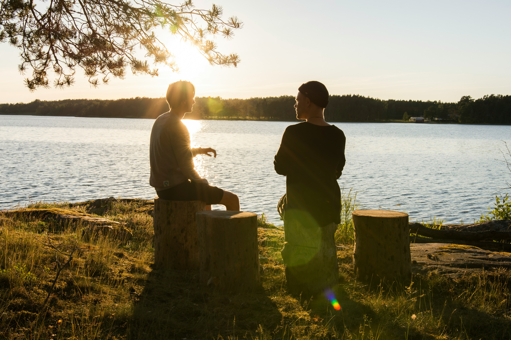
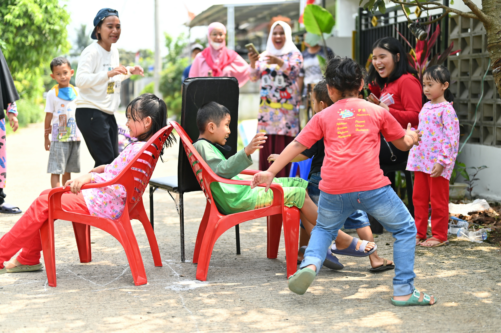

Tiga Pilar Program
Pendekatan Holistik Dual Pillar System

Pilar 1: Bantuan Kebutuhan Dasar
Definisi: Penyediaan logistik esensial untuk memenuhi kebutuhan fisik mendesak.
Mengapa Penting: Memberikan logistik adalah langkah pertama untuk menunjukkan bahwa penyintas diperhatikan dan tidak ditinggalkan. Ini juga menjadi prasyarat agar intervensi psikososial dapat berjalan efektif.
Jenis Bantuan Logistik:
- Sabun mandi, sabun tangan, sampo, pasta gigi, sikat gigi
- 3 truk tangki air bersih, tandon 1000L
- Beras, makanan siap santap, pakaian baru
- Senter LED, boots anti slip, selimut, bantal
- Obat-obatan, perban, kapas, hand sanitizer
- Mainan, alat tulis, buku cerita untuk anak
- Popok, bubur bayi, sabun bayi

Pilar 2: Pendampingan Psikologis (PFA)
Definisi: Psychological First Aid adalah pendekatan berbasis bukti ilmiah untuk dukungan emosional dan psikologis bagi individu yang mengalami trauma atau krisis.
Elemen Utama PFA:
- Manusiawi: Menghormati kemanusiaan tanpa menghakimi
- Berbasis Bukti: Metode terbukti efektif dalam penelitian ilmiah
- Empati: Pendampingan dengan hati tulus
- Aman: Ruang di mana penyintas bebas berbagi
Mengapa Penting: Trauma psikologis bisa bertahan berbulan-bulan hingga bertahun-tahun. Tanpa intervensi awal, penyintas berisiko mengalami PTSD, depresi, dan gangguan mental lainnya. PFA adalah pencegahan awal yang cost-effective.

Pilar 3: Aktivitas Ramah Anak
Definisi: Kegiatan bermain, menggambar, dan ekspresi emosi yang dirancang khusus untuk anak-anak.
Jenis Aktivitas:
- Bermain outdoor & indoor (normalisasi, interaksi sosial)
- Menggambar & melukis (ekspresi visual tanpa kata-kata)
- Storytelling (berbagi pengalaman dalam format aman)
- Musik & nyanyian (rileksasi, ekspresi emosi)
- Gerak & tarian yoga sederhana (rileksasi fisik)
Insight Penting: Anak-anak mengekspresikan trauma melalui permainan dan seni lebih efektif dibanding percakapan. Aktivitas ini membantu mereka merasa aman, dirawat, dan tidak sendirian.